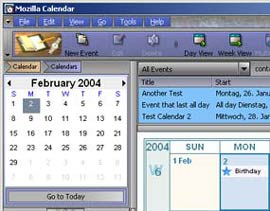
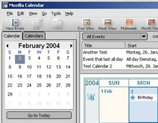
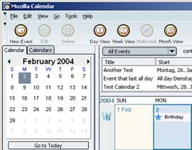
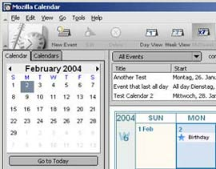

Calendar テーマ
Calendar のために、新しいテーマを作ってくれている人たちがいます。その人たちの作品を並べてみました：
|  |  |
| Sky Pilot Sailfish 氏作成 | Pinball Johannes Schellen 氏作成 |
|  |  |
| Orbit 3+1 Chris Neale 氏作成 | Gray Modern Johannes Schellen 氏作成 |

| |
| Orbit Retro Chris Neale 氏作成 | |
これら以外にも、 Aaron Spuler 氏が作成されたテーマのほとんどは Calendar に対応しています。